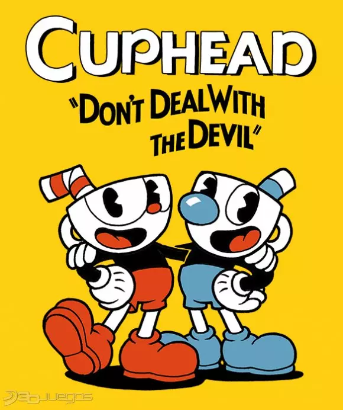

🌲 Locuras del bosque
Primer nivel run and gun del juego, con enemigos y obstáculos variados. Ideal para aprender las mecánicas básicas.

Uno de los juegos más desafiantes de los últimos años, inspirado en las caricaturas de 1930.
| Título | Cuphead |
|---|---|
| Desarrollador | Studio MDHR |
| Lanzamiento | 29 de septiembre de 2017 |
| Género | Run and Gun |
| Modos | Un jugador y cooperativo local |
Cuphead y Mugman son dos hermanos que viven tranquilamente en la Isla Tintero. Un día, desobedecen los consejos del Anciano Tetera y llegan al casino del Diablo. Tras perder una apuesta, quedan endeudados y deben recorrer la isla derrotando a distintos jefes para recuperar los contratos de las almas y saldar su deuda.
Primer nivel run and gun del juego, con enemigos y obstáculos variados. Ideal para aprender las mecánicas básicas.
Un slime gigante y saltarín. Buen jefe para practicar el esquive y el salto sobre sus ataques de baba.
Dos ranas boxeadoras con distintos estilos de ataque: una rápida y ágil, la otra lenta pero contundente.
Jefe vegetal con ataques variados y patrones de movimiento que se vuelven más complejos en cada fase.
Segundo nivel run and gun del juego, con una cantidad considerable de enemigos y obstáculos que requieren reflejos rápidos.
Primer nivel completamente aéreo. Un zeppelin que se transforma en distintas figuras a lo largo del combate.
Trío de verduras traviesas. El combate premia mantener la calma y aprender a distinguir a los tres personajes.
Primer nivel de mausoleo, con enemigos fantasmas que requieren un dominio considerable de la mecánica de parry.
Tercer nivel run and gun del juego, un tanto complicado por la variedad de enemigos y obstáculos.
Primer jefe de la Isla Tintero II. Un enemigo formidable con ataques rápidos y patrones de movimiento complicados.
Segundo jefe de la Isla Tintero II. Nos presenta un desafío considerable con sus ataques mágicos y movimientos impredecibles.
Tercer jefe de la Isla Tintero II. Es un enemigo desafiante con habilidades únicas y un comportamiento impredecible dentro de su carnaval.
Nivel run and gun ambientado en una feria, con enemigos rápidos y trampas ocultas a lo largo del recorrido.
Nivel aéreo de múltiples fases en las que se requiere una buena coordinación y timing frente a un pájaro cantor gigante.
Un dragón amigable pero descontrolado. Sus fases finales exigen buenos reflejos para esquivar en espacios reducidos.
Nivel run and gun ambientado en un muelle, con enemigos marinos y plataformas inestables.
Sirena que combate junto a criaturas marinas. Su ataque de hipnosis obliga a mantenerse siempre en movimiento.
Pirata veterano acompañado de su tripulación. Cada fase introduce un nuevo patrón de ataque naval.
Nivel run and gun montañoso, uno de los más largos del juego, con enemigos variados y jefes de sección.
Un robot gigante controlado por el Dr. Kahl, con múltiples formas y ataques mecánicos que se intensifican en cada etapa.
Jefe teatral con varias transformaciones escénicas. Cada acto de la obra trae un nuevo patrón de ataque.
Último nivel de mausoleo, con los enemigos fantasmas más resistentes de los tres.
Reina abeja con un enjambre a su disposición. Sus fases alternan ataques de largo y corto alcance.
Recorrido sobre un tren en movimiento antes del combate contra su maquinista.
El maquinista fantasma del Tren Fantasma. Combina ataques de rata con maquinaria y vagones descontrolados.
Guardián del casino del Diablo. Hay que enfrentar a varios de sus secuaces en su tablero antes del combate final contra él.
El jefe final del juego. Sus múltiples transformaciones ponen a prueba todo lo aprendido a lo largo de la isla.
Video con la ubicación de las monedas escondidas a lo largo de los niveles, útiles para desbloquear objetos adicionales en la tienda del Anciano Tetera.
| Arma | Descripción | Recomendación |
|---|---|---|
| Peashooter | Arma básica del juego. | Ideal para principiantes. |
| Spread | Mucho daño a corta distancia. | Excelente contra varios jefes. |
Truco relacionado con el uso de las bombas aéreas durante el combate contra el Diablo, útil para acelerar una de sus fases.
Si deseas adquirir el juego de forma oficial, puedes hacerlo desde Steam.
Comprar en Steam